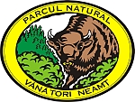

Parcul Natural Vânători Neamț
Parcul Natural Vânători Neamţ este o arie protejată constituită în anul 1999, cu statut de parc natural, destinată protejării moştenirii naturale, spirituale şi culturale a zonei, gospodăririi durabile a pădurilor, conservării peisajului şi tradiţiilor locale, reintroducerii zimbrului în arealul său natural şi încurajării turismului bazat pe aceste valori.
Zona include o largă paletă de valori naturale, culturale şi istorice; în consecinţă, obiectivele administraţiei parcului sunt diverse, legate de specificul local, în acord cu principiile general valabile ale managementului ariilor protejate. Existenţa tuturor acestor valori şi importanţa integrării armonioase a rezultatelor activităţii umane cu mediul înconjurător, necesită elaborarea şi implementarea unui plan de management specific ariei luate în considerare. În acest mod se poate urmări îndeplinirea obiectivului major al parcului, respectiv conservarea biodiversităţii, în cadrul unei strategii adecvate, prin măsuri cu caracter unitar, care să permită cunoaşterea cât mai detaliată a situaţiei existente şi stabilirea unor obiective realiste.
Reguli de vizitare
Pentru binele vostru şi al Parcului, vă rugăm să respectaţi câteva reguli simple:
- Ca să nu vă rătăciţi şi să fiţi ajutaţi în caz de nevoie, mergeţi doar pe traseele marcate.
- Ca să nu ne trezim în cort cu un urs care caută mâncare, trebuie să scoatem afară din Parc şi să depozităm la container deşeurile, chiar şi cele biodegradabile. Dacă nu scoatem afară deşeurile din parc, riscăm întâlniri periculoase cu urşi deveniţi gunoieri, din vina noastră.
- Campaţi doar în locurile permise, fără a săpa şanţuri în jurul cortului şi fără a distruge plantele pentru a vă aranja bivuacul.
- Ocrotiţi orice plantă, chiar dacă vi se pare a fi doar o buruiană nefolositoare. Poate că este o plantă care nu mai există în altă parte.
- Lăsaţi-vă câinele acasă sau dacă nu se poate acest lucru, ţineţi-l tot timpul în lesă, pentru a nu deranja animalele sălbatice şi puii lor.
- Protejaţi vieţuitoarele din apele Parcului dacă nu vă spălaţi cu săpun ori detergenţi.
- Protejaţi animalele, chiar dacă unele vă par a fi dăunătoare sau periculoase. De exemplu, nu omorâm şerpii, doar îi ocolim. Fiţi siguri că nu vor încerca să ne prindă.
- Refugiile şi adăposturile montane sunt menite să ofere adăpost celor surprinşi de pe vreme rea, nu sunt locuri potrivite pentru chefuri.
Imagini de la Parcul Natural Vânători
Rezervația de zimbri „Dragoș-Vodă” Vânători-Neamț
În anul 1968 a fost înființată Rezervația de zimbri „Dragoș-Vodă” Vânători-Neamț, aflată în raza Parcului Natural Vânători Neamț. Din cronica ocolului Silvic Târgu Neamț, aflăm umătoarele:
"Aici au fost aduse, în anul 1970, 3 exemplare de zimbri, originare din Polonia, cărora li s-au dat numele de Rarău, Roxana și Raluca. În anul 1974 se nasc primele două exemplare de zimbru în cadrul rezervației: Rosina - femelă și Roco - mascul. În același an, rezervația găzduiește filmarea unor secvențe de vânătoare pentru filmele Frații Jderi și Ștefan cel Mare - Vaslui 1475.
La începutul lunii august a anului 1975, toți cei cinci zimbri, sătui de captivitate, reușesc să rupă gardul șubred al țarcului și ajung pe piscul Brăileanca și în poiana Grajduri, unde consumă din belșug coajă de carpen, fag, frasin și chiar de brad, sortimente care le lipseau în țarcuri. După trei săptămâni, au fost readuși cu mare dificultate în rezervație. La sfârșitul lunii august 1975, moare femela Roxana ca urmare a efortului la care a fost supusă cu ocazia filmării secvențelor de goană pentru filmul Ștefan cel Mare - Vaslui 1475, cumulat cu efortul readucerii în țarcuri și cu o boală mai veche.
În anul 1982, s-au transferat la rezervația de zimbri Bucșani-Neagra următorii zimbri: Medalist, Mentol, Metocika, Meringhia și Robu, rămânând în Rezervația Dragoș-Vodă, zimbrul Rarău și zimbroaica Ravena."
Ca urmare a vârstei înaintate, în anul 1997, în Rezervația "Dragoș Vodă" a rămas o singură femelă, în vârstă de 12 ani. Pentru refacerea efectivelor, în 1998 s-au adus de la rezervația de zimbri Bucșani-Neagra trei zimbri: Rodion, Rochita și Rodia. În mai 2005, Rezervația de Zimbri și Faună Carpatină "Dragoș Vodă" de la Vânători a cumpărat de la Grădina Zoologică din Berna (Elveția), patru zimbri: trei masculi și o femelă
În prezent, în Rezervația Dragoș-Vodă se găsesc 4 exemplare de zimbri (2 femele, un mascul și un vițel de zimbru de sex feminin) într-un țarc de aproximativ 4 ha. Tot în cadrul rezervației, se află un număr de trei iazuri (Zimbrilor, Cerbilor și Căpriorilor), bogată în faună piscicolă și loc de popas pentru unele specii de avifaună pentru pasaj, oaspeți de toamnă și iarnă.

{kind=link}